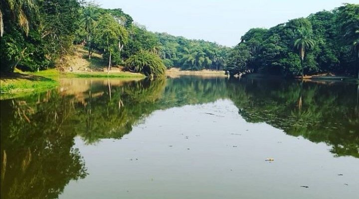
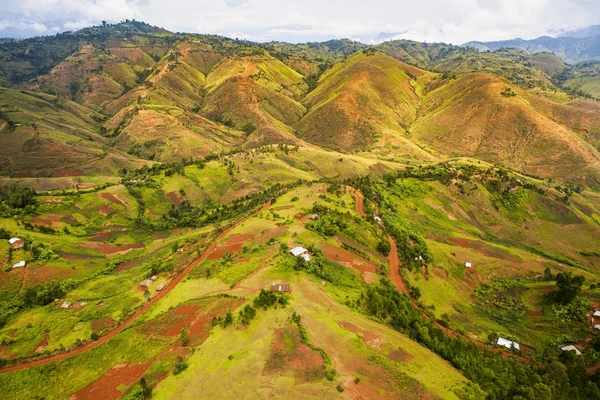
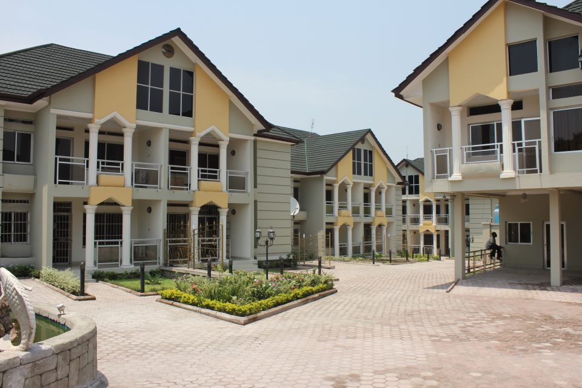
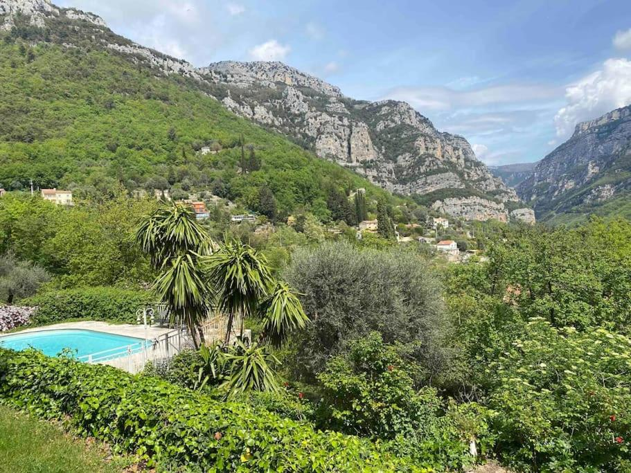

Vue panoramique
Un point dominant offrant une vue splendide sur toute la vallée.

Coucher de soleil
Le moment magique où le soleil disparaît derrière les collines.

Panorama verdoyant
Un paysage riche en végétation luxuriante.

Paysage vallonné
Des collines qui se succèdent à perte de vue.

Vue à couper le souffle
Une scène naturelle impressionnante et mémorable.

Université de Kinzatu
Un établissement d’enseignement au cœur de la région.
Un spectacle naturel grandiose
Le Point de Vue Panoramique sur la Vallée offre une vision imprenable sur les reliefs verdoyants
et la beauté sauvage de Kinzatu. C’est l’endroit idéal pour contempler la nature et immortaliser
des souvenirs inoubliables.
Les étudiants pourront admirer un paysage à 360°, propice à la réflexion, à l’inspiration et à la détente.